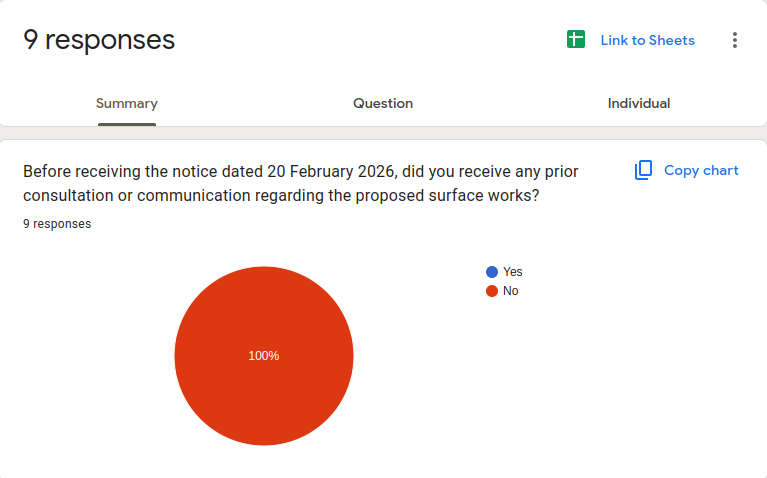
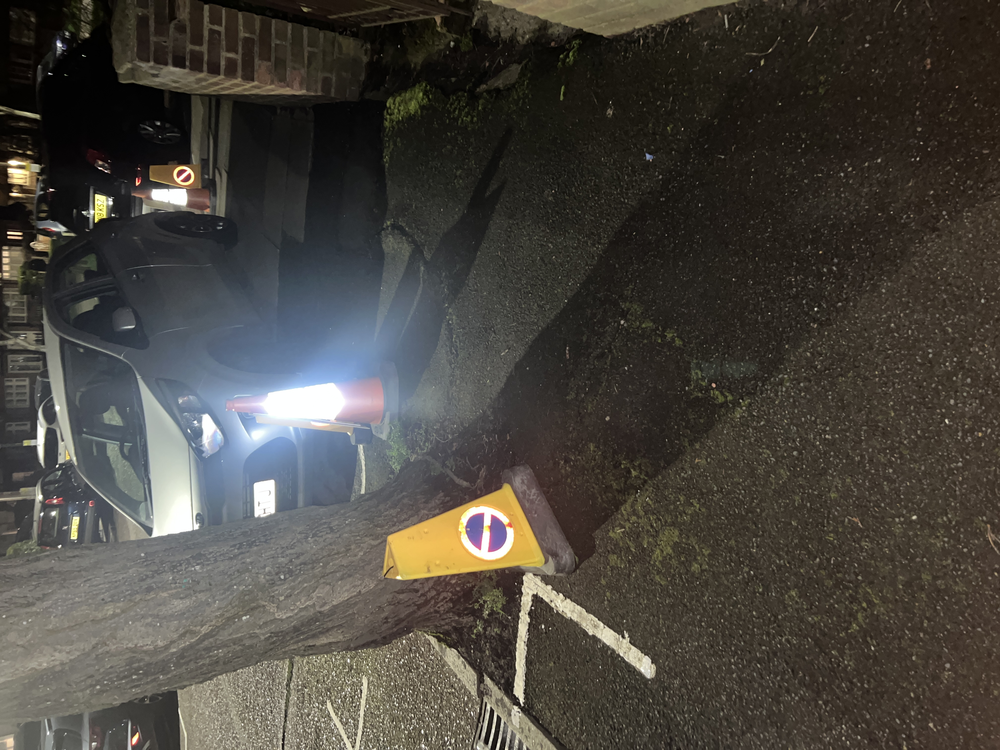
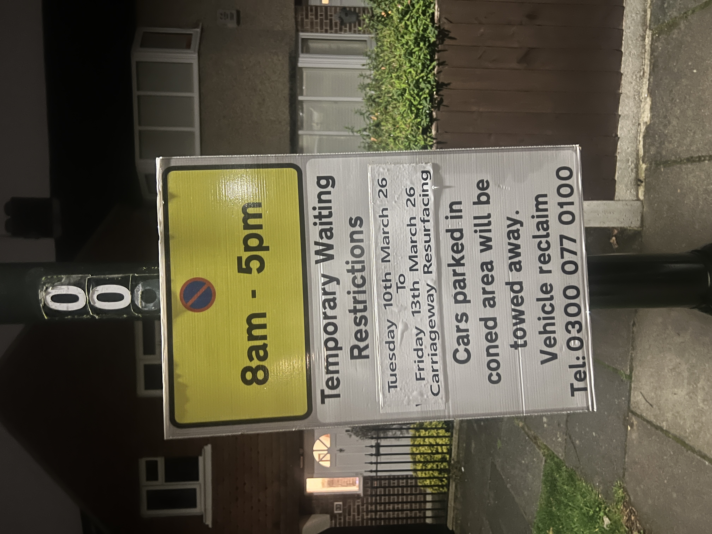
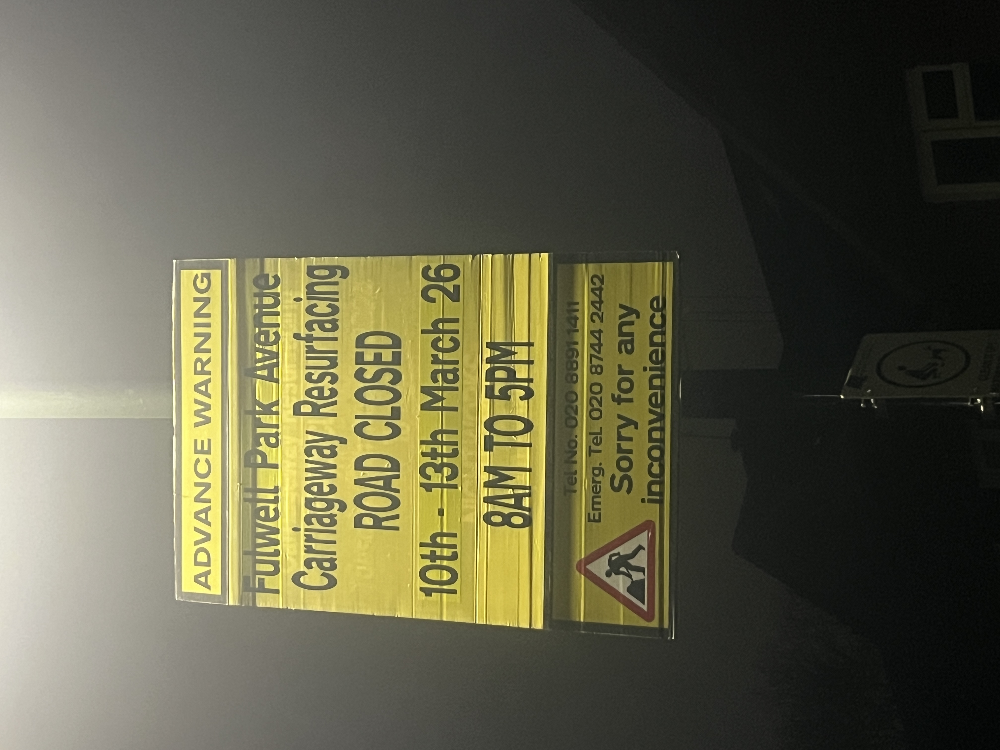

London Borough of Richmond upon Thames · West Twickenham Ward
Fulwell Park Avenue
Surface Material Change 2026
Resident Information Briefing
Council notice dated 20 February 2026 · Works scheduled from 10 March 2026
Document Status
This page consolidates publicly available information relating to the proposed resurfacing of Fulwell Park Avenue in the London Borough of Richmond upon Thames.
It has been prepared by local residents to document the timeline of events, relevant council documentation, and correspondence with elected representatives.
Page Overview
- Timeline of Events (Apr 2025–Mar 2026)
- Council Notice — February 2026 works notice
- Resident Correspondence — February 2026
- Councillor Response — 7 March 2026
- Freedom of Information Requests
- Formal Complaint — 8 March 2026
- Outstanding Questions
- Resident Poll — Consultation check
- Surface Material Information — Concrete vs asphalt
- Examples from Recently Resurfaced Roads — Asphalt fretting observations
- Tree Root Interaction with Asphalt Surfaces — Examples from nearby streets
- Committee Decision Reference — April 2025 council minutes
- Data Requested from Council — FOI documentation sought
- Sources and References
Timeline of Events
- 7 April 2025 — Transport and Air Quality Committee approves the 2025/26 Highway Maintenance Programme.
- 20 February 2026 — Council notice issued advising of proposed resurfacing works.
- 20 February 2026 — Freedom of Information request submitted seeking inspection data, SCANNER survey results and engineering assessments used to prioritise the resurfacing scheme.
- Late February 2026 — Residents begin receiving the notice regarding the planned surface replacement.
- 27 February 2026 — Resident correspondence sent to ward councillors requesting clarification of governance and consultation process.
- 27 February 2026 — Follow-up Freedom of Information request submitted.
- 7 March 2026 — Ward councillor responds confirming Fulwell Park Avenue reached the top of the borough’s maintenance prioritisation list and that technical information has been requested from officers.
- 7 March 2026 — Supplementary Freedom of Information clarification submitted requesting additional inspection and condition assessment data.
- 8 March 2026 — Formal complaint submitted to Richmond Council (reference FS-Case-808638772).
- 7–9 March 2026 — Advance resurfacing signage installed on Fulwell Park Avenue indicating carriageway resurfacing works scheduled between 10 March and 13 March 2026, with temporary waiting restrictions between 8am and 5pm. Residents noted that the signage did not identify the contractor responsible for the works or include a works reference number.
- 10 March 2026 — Resurfacing works scheduled to commence (subject to council response to complaint and outstanding information requests).
This timeline summarises publicly available information regarding the proposed works.
Council Notice
The following notice was received by residents, dated 20 February 2026, advising of the proposed highway works.
Council Notice – dated 20 February 2026 (PDF version)
If the document does not display, click here to download the PDF.
Resident Correspondence
Residents have contacted West Twickenham ward councillors seeking clarification regarding the proposed resurfacing works on Fulwell Park Avenue.
Emails were sent to the three ward councillors on 27 February 2026 requesting information regarding consultation, condition assessments, and the decision-making process relating to the proposed surface replacement.
This section is included to maintain transparency regarding communication between residents and elected representatives.
If further responses or clarifications are received they will be reflected on this page so residents can access the most accurate information available.
Contact Your Ward Councillors
Ward councillors represent residents in decisions of this kind. Individual emails carry more weight than a collective letter.
- Cllr Piers Allen cllr.p.allen@richmond.gov.uk
- Cllr Alan Juriansz cllr.a.juriansz@richmond.gov.uk
- Cllr Laura O’Brien cllr.l.obrien@richmond.gov.uk
Opens your email client with the councillors’ addresses and a pre-written message which you may edit before sending.
Residents are encouraged to contact councillors individually as well as collectively.
Email Template
Some residents have asked what to write when contacting councillors. The following template can be copied and edited if helpful.
Subject: Fulwell Park Avenue surface material change Dear Councillor, I am a local resident seeking clarification regarding the proposed replacement of the exposed aggregate concrete surface on Fulwell Park Avenue. Could you please clarify: • When ward members were first notified of this scheme • Whether residents were consulted prior to the decision • What condition assessment determined that full resurfacing is required Given that works are scheduled to begin shortly, I would appreciate any information regarding the decision-making process prior to commencement. Kind regards [Name]
Providing a starter template often helps residents contact councillors more easily, as it removes uncertainty about what to write.
Suggested Questions
- When were ward members notified of this scheme?
- Were residents consulted regarding the replacement of the exposed aggregate concrete surface?
- Under what delegated authority was this decision approved?
Councillor Response
Response from Cllr Alan Juriansz – 7 March 2026
The following is a record of the response received from ward councillor Cllr Alan Juriansz in reply to resident correspondence dated 27 February 2026. The response is documented here so that residents can see the information provided to date.
Cllr Juriansz provided the following covering note:
“Thank you for your email. I have responded to your questions below in red. I will respond further when I have heard from officers.”
In response to the question regarding the date on which ward members were consulted or notified of this scheme:
“All roads in the borough under the control of the council are subject to condition evaluation and this determines where they are on the list for maintenance and resurfacing. Fulwell Park Avenue reached the top of this list in our ward and therefore became eligible for resurfacing, we were made aware of this a few months ago.”
In response to the question regarding when residents were canvassed and by what method:
“Over many years we regularly carry out door to door canvassing and the poor condition of the road surface has come up many times.”
In response to the question regarding any assessment of interaction between tree roots and the proposed surface material:
“I have asked our officers for this technical information and will get back to you as soon as possible.”
The councillor indicated that further technical information has been requested from council officers and will be provided when available.
This section will be updated when further information is received from the councillor or from council officers.
Freedom of Information Requests
Freedom of Information requests have been submitted (Case reference: FS Case 804260695) to the London Borough of Richmond upon Thames seeking documentation relating to the decision to resurface Fulwell Park Avenue. These requests were submitted under the Freedom of Information Act 2000.
- 20 February 2026 — Initial FOI request submitted.
- 27 February 2026 — Follow-up FOI request submitted.
- 7 March 2026 — Supplementary clarification submitted requesting additional inspection data.
The requests seek inspection data, SCANNER survey results and engineering assessments used to prioritise Fulwell Park Avenue within the 2025/26 Highway Maintenance Programme resurfacing scheme.
Responses received under the Freedom of Information Act 2000 will be published on this page.
Formal Complaint
Formal Complaint Submitted – 8 March 2026
On 8 March 2026 a formal complaint was submitted to Richmond Council regarding the proposed resurfacing of Fulwell Park Avenue.
The complaint requests clarification regarding:
- The condition assessment used to prioritise the resurfacing scheme
- Consultation with residents prior to the issue of the works notice
- The engineering rationale for replacing the existing concrete surface with asphalt
Complaint reference: FS-Case-808638772
This confirmation indicates the complaint has been formally logged within the council’s corporate complaints procedure.
This section will be updated when a substantive response is received from the council.
Outstanding Questions
The following questions have been raised by residents and have not yet received a full response from the council or ward members.
- When ward councillors were notified of this scheme
- Whether residents were consulted regarding replacement of the long-established surface with an alternative material
- Whether any assessment has been undertaken regarding interaction between roadside tree roots and the proposed surface material
- Whether commencement can be paused pending clarification
- Under what delegated authority the decision to proceed was approved
- What condition assessment determined that full resurfacing of Fulwell Park Avenue was required
- Whether any consideration was given to repairing or retaining the existing exposed aggregate concrete surface rather than replacing it
- What Street Works permit number has been issued for the Fulwell Park Avenue resurfacing works
- Whether alternative surfacing approaches were considered, including retaining or repairing the existing exposed aggregate concrete surface
- Conway has been appointed to undertake the resurfacing works — under which framework or contract arrangement have the works been commissioned
Resident Poll
Residents are invited to indicate whether they received any consultation prior to the notice dated 20 February 2026.
This poll is administered via Google Forms. Responses are anonymous unless you choose to provide identifying information.
Results will be shared with ward councillors.
Poll Results Summary
Flyers inviting residents to participate in the poll were distributed to approximately 160 households on Fulwell Park Avenue out of an estimated total of around 250 properties. Nine residents have responded to the survey at the time of writing. All respondents indicated that the notice dated 20 February 2026 was the first communication they had received regarding the proposed resurfacing works.
Poll results as at 7 March 2026

Surface Material Information
Exposed aggregate concrete is a paving technique where the top layer of cement paste is removed to reveal the underlying stones (aggregate). This method is commonly used in driveways, pathways, and public road surfaces.
The technique involves pouring concrete and, while curing, either applying a surface retarder or washing away the top 2–6mm of cement paste to expose the decorative stone layer beneath.
The proposed works involve replacing the existing exposed aggregate concrete surface with asphalt. This represents a change in surface material rather than a repair to the existing exposed aggregate concrete surface.
| Exposed Aggregate Concrete | Tarmac (Asphalt) |
|---|---|
| Highly durable structural surface once installed | Typically requires resurfacing more frequently |
| Aggregate texture provides natural traction and non-slip properties | Smoother surface relying on aggregate embedded in asphalt |
| Resistant to wear from traffic and environmental conditions such as freezing and thawing | More susceptible to deformation and rutting under repeated loads |
| Often low maintenance once installed, requiring only periodic cleaning or resealing | Maintenance generally involves patching, resurfacing, and periodic replacement |
| Distinctive textured appearance using decorative stone such as pebbles, granite, or river rock | Uniform dark road surface commonly used across road networks |
Sources: Google search summaries and general descriptions of exposed aggregate concrete and road construction terminology (including Wikipedia references).
Current Surface
The existing carriageway consists of an exposed aggregate concrete surface which has formed the established road finish for several decades, without issues such as significant potholes.
Residents have requested clarification regarding the engineering assessment used to determine that full resurfacing is required.
Examples of the existing exposed aggregate concrete surface currently present on Fulwell Park Avenue.


Examples from Recently Resurfaced Roads
Residents have visited Lincoln Avenue, Twickenham — a nearby road which ward councillors have indicated was resurfaced using the same asphalt material proposed for Fulwell Park Avenue, and which has been cited as an example of the proposed surface treatment.
Lincoln Avenue is located within the same area identified in the council’s resurfacing programme and represents an example of the type of asphalt surface proposed for Fulwell Park Avenue.
During site visits conducted in March 2026, areas of surface wear known as “fretting” were observed, along with visible patch repairs where sections of the carriageway have already required intervention following resurfacing.
Fretting is a form of asphalt surface deterioration where the binder holding the aggregate weakens, allowing small stones to loosen from the surface. Over time this can lead to rough patches and exposed aggregate requiring repair.
The photographs and video below document the current condition of Lincoln Avenue and are included so residents can assess the likely long-term performance characteristics of the material proposed for Fulwell Park Avenue.


These examples are included to document observable surface behaviour on nearby roads that have recently been resurfaced with asphalt.
Short recording showing surface condition and fretting visible across sections of the carriageway.
Lincoln Avenue, Twickenham — surface condition recorded during a resident site visit in March 2026, showing areas of fretting and surface wear on a recently resurfaced residential road.
These observations were recorded by residents during local site visits and are included to provide visual examples of how asphalt surfaces can change over time following resurfacing works.
Map showing the location of observed surface wear on nearby recently resurfaced roads.
Tree Root Interaction with Asphalt Surfaces
The following photographs show examples from nearby streets where asphalt surfaces have lifted, cracked, or distorted due to interaction with tree roots.
These examples are relevant because the council has proposed replacing the long-standing exposed aggregate concrete surface on Fulwell Park Avenue with a flexible asphalt surface.
Where large roadside trees are present, asphalt surfaces can be vulnerable to deformation caused by root growth, potentially leading to cracking, lifting, and repeated repair cycles.
For this reason, clarification has been requested regarding whether any engineering or arboricultural assessment was undertaken before selecting asphalt as the replacement surface material.






These photographs were taken by residents on nearby streets and are included to illustrate the potential long-term interaction between mature street trees and asphalt surfacing.
Committee Decision Reference
During communication with a ward councillor it was indicated that resurfacing policy affecting this road was approved during a council committee meeting in April 2025.
Residents are reviewing the relevant committee documentation to understand how Fulwell Park Avenue was selected within the 2025/26 Highway Maintenance Programme.
The relevant documents are linked below.
Section 53 of the Transport and Air Quality Committee minutes dated 7 April 2025 references approval of the 2025/26 highway maintenance programme.
Fulwell Park Avenue is listed in Appendix 1A of the London Borough of Richmond upon Thames Highway Maintenance Programme 2025/26, which was approved by the Transport and Air Quality Committee on 7 April 2025.
The programme lists Fulwell Park Avenue – Entire Road – West Twickenham as a proposed carriageway resurfacing scheme.
The appendix identifies roads scheduled for resurfacing but does not specify the surface material to be used for individual schemes.
Committee documentation indicates that resurfacing programmes are informed by engineering inspection data and asset condition assessments used to prioritise roads across the borough.
Residents have therefore requested clarification regarding the condition assessment or inspection data used to prioritise Fulwell Park Avenue for resurfacing within the programme.
Key Documents
- Council Notice – 20 February 2026
- Transport & Air Quality Committee Minutes – 7 April 2025
- Highway Maintenance Programme 2025–2026 Appendix 1A (Carriageway Resurfacing List)
Document Trail
- 7 April 2025 — Transport and Air Quality Committee approves the 2025/26 Highway Maintenance Programme.
- 20 February 2026 — Council notice issued to residents advising of resurfacing works.
- Appendix 1A — Fulwell Park Avenue listed as a proposed carriageway resurfacing scheme.
- March 2026 — Residents begin reviewing the published highway maintenance programme documentation and requesting clarification.
Data Requested from Council
Residents have requested the following technical documentation from the London Borough of Richmond upon Thames under the Freedom of Information Act 2000 (Case reference: FS Case 804260695).
- SCANNER survey results for Fulwell Park Avenue
- Carriageway condition score used for maintenance prioritisation
- Engineering inspection reports
- Asset management system condition rating
- Any arboricultural assessment relating to tree root interaction with the proposed surface material
- Any engineering assessment comparing repair of the existing surface with full resurfacing
This information has not yet been received. Responses will be published on this page when available.